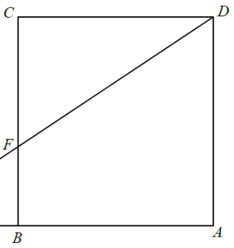

In the figure, \(ABCD\) is a square. \(E\) is a point lying on \(AB\) produced such that \(BE = 4\text{ cm}\). \(BC\) and \(DE\) intersect at the point \(F\). If \(EF = 5\text{ cm}\), then \(DF = \)
(The four picture options \(20\text{ cm}\), \(15\text{ cm}\), \(12\text{ cm}\) and one further length are the choices; here we derive the correct one.)

\(ABCD\) is a square, so all sides are equal and every angle is \(90^\circ\). \(E\) lies on \(AB\) produced, i.e. beyond \(B\), with \(BE = 4\text{ cm}\). \(BC\) and \(DE\) cross at \(F\), and \(EF = 5\text{ cm}\).
Let \(AB = BC = CD = DA = s\). Notice the right angle at \(B\) (in \(\triangle EBF\)) and the right angle at \(A\) (in \(\triangle EAD\)).
Compare \(\triangle EBF\) and \(\triangle EAD\):
Hence the two triangles are equiangular, so \(\triangle EBF \sim \triangle EAD\) (AAA).
Corresponding sides are proportional:
\[ \frac{EF}{ED} = \frac{EB}{EA} = \frac{BF}{AD} \]Use the pieces we know: \(EB = 4\), \(EA = EB + BA = 4 + s\), and \(AD = s\). Let \(DF = x\), so \(ED = EF + FD = 5 + x\).
Substituting \(EF = 5\), \(ED = 5 + x\), \(EB = 4\), \(EA = 4 + s\):
\[ \frac{5}{5+x} = \frac{4}{4+s} \]Cross-multiply the proportion:
\[ 5(4+s) = 4(5+x) \Rightarrow 20 + 5s = 20 + 4x \Rightarrow s = \frac{4x}{5} \]From the same similarity, \(\dfrac{BF}{AD} = \dfrac{EB}{EA} = \dfrac{4}{4+s}\). With \(AD = s\):
\[ BF = s \cdot \frac{4}{4+s} \]But \(BF = BC - FC = s - FC\), and \(\triangle EBF\) is right-angled at \(B\), so Pythagoras gives \(BF^2 + 4^2 = 5^2\):
\[ BF^2 = 25 - 16 = 9 \Rightarrow BF = 3 \text{ cm} \]Now use \(BF = 3\) together with \(\dfrac{EB}{EA} = \dfrac{BF}{AD}\):
\[ \frac{4}{4+s} = \frac{3}{s} \Rightarrow 4s = 12 + 3s \Rightarrow s = 12 \]Then substitute back into \(s = \dfrac{4x}{5}\):
\[ 12 = \frac{4x}{5} \Rightarrow 4x = 60 \Rightarrow x = 15 \]Check the answer with the scale drawing. If \(DF = 15\) cm and \(s = 12\) cm, then \(DE = 5 + 15 = 20\), \(EA = 4 + 12 = 16\), \(AD = 12\).
\[ \frac{EF}{ED} = \frac{5}{20} = \frac{1}{4},\qquad \frac{EB}{EA} = \frac{4}{16} = \frac{1}{4}\quad\checkmark \]And \(BF = s \cdot \tfrac{EB}{EA} = 12 \cdot \tfrac14 = 3\), consistent with the \(3\!-\!4\!-\!5\) side \(EF = 5\) (since \(3^2 + 4^2 = 25\)).